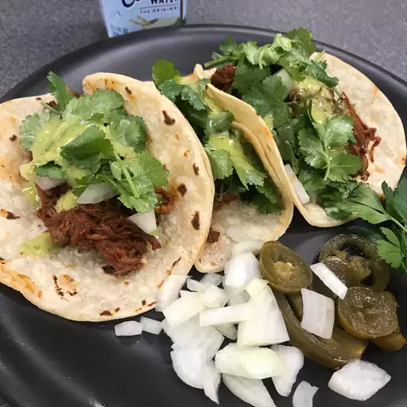

Receta
Birria de Res Tacos

Descripcion
Tacos de birria mexicana, estilo Jalisco, hechos con carne de res estofada cocida a fuego lento en una fragante salsa de 3 chiles con una deliciosa mezcla de especias. Los tacos crujientes y la tierna y deliciosa carne de res se combinan con queso mexicano derretido en esta impresionante comida. ¡Esta receta lleva un poco de tiempo pero vale la pena!
ingredientes
Chiles secos :La sabrosa birria comienza con chiles guajillos secos, chiles de árbol y chiles anchos. Para darle un poco más de calor, no le quites todas las semillas.
Carne de res : El asado de carne de res es perfecto para estofar durante horas. Cuando hayas terminado, la carne se desmenuzará increíblemente fácilmente.
Condimentos : Necesitarás sal, pimienta, ajo fresco, dientes enteros, canela, comino, tomillo, mejorana y orégano.
Aceite de oliva : Dorar la carne en aceite de oliva antes de agregar el líquido para estofar.
Tomates : Ase los tomates Roma antes de mezclarlos con otros ingredientes para desbloquear capas adicionales de sabor.
Vinagre : Dos cucharadas de vinagre blanco añaden aún más acidez al líquido para estofar.
Tortillas : Utilice tortillas de maíz caseras o compradas en la tienda
Cebolla y cilantro : Termina cada taco con cebolla picada y cilantro fresco para darle un toque final de sabor y textura.
pasos
Paso 1
Hervir los pimientos secos durante 5 minutos, luego retirar del fuego y dejar en remojo hasta que el agua se enfríe. Escurrir reservando un poco de agua.
Paso 2
Sazone la carne y dore por todos lados en aceite en una olla.
Paso 3
Asa los tomates hasta que la piel se ampolle y comience a pelarse.
Paso 4
Licúa los chiles remojados con el agua de chile reservada, los tomates, el vinagre y los condimentos.
Paso 5
Colar la salsa y verter sobre la carne. Cubra la olla y cocine hasta que la carne comience a desmoronarse, rociándola con frecuencia. Deje reposar la carne y luego desmenúcela.
Paso 6
Calienta las tortillas en el comal. Rellena cada tortilla con carne, cebolla y cilantro.